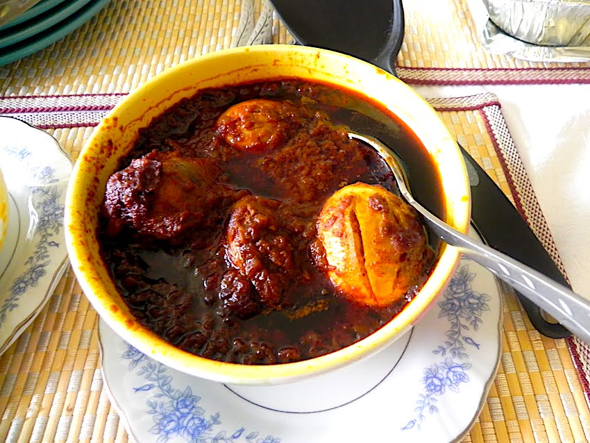

home
doro

doro wot
doro wot is a spicy Ethiopian chicken stew with onions, berbere, and boiled eggs, served with ingera.
ingredients
- chicken
- Onions
- garlic
- ginger
- berbere spice
- niter kibbeh(Ethiopian spiced butter)
- food oil
- salt
- hard-boild eggs
- water
- Marinate chickenwith lemon juice and salt; set aside
- slow-cook chopped onions (without oil) until soft and golden.
- Add niter kibbeh, then stir in garlic, and berbere spice; cook until fragrant
- Add a littel water to make a thick sauce.
- Add a marinated chicken; cook covered until tender.
- Add boiled eggs and simmer to absorb the flavors.
- adjustsalt and serve hot with